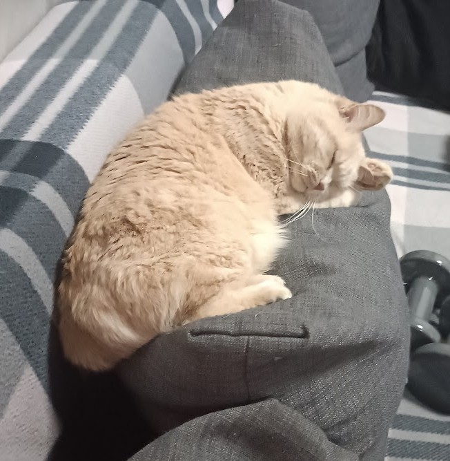
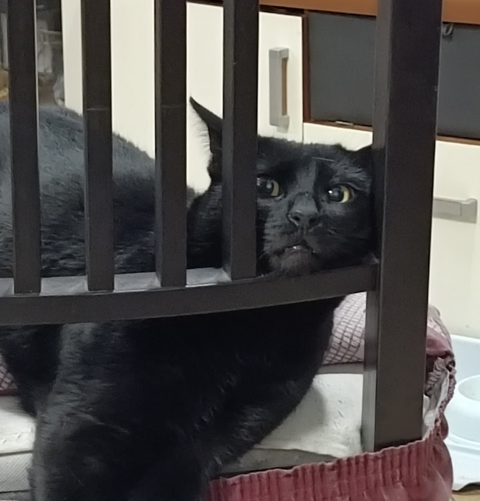
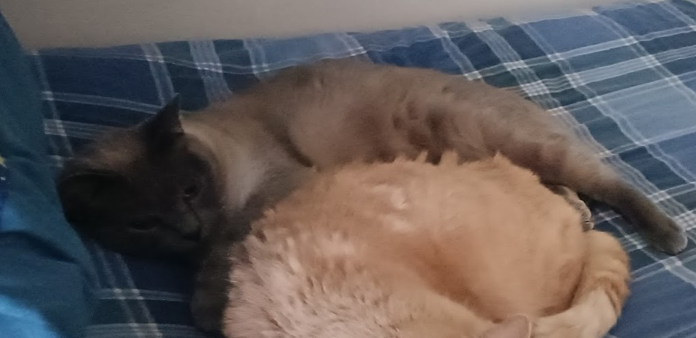
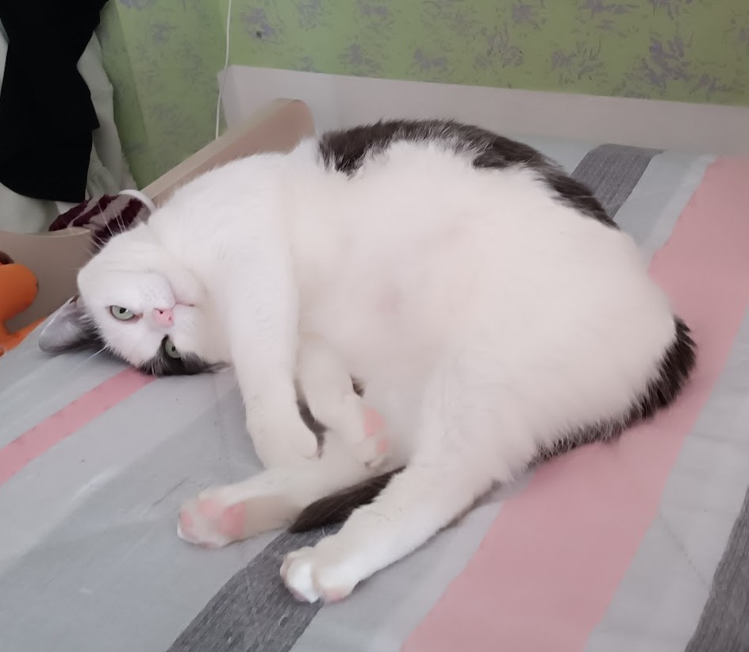

I'm a technology enthusiast with a love for sports, music and animals. I enjoy combining my passion for computer science with creative design to build engaging digital experiences. When I'm not at the computer, you'll find me playing volleyball at the gym or at home cuddling with my cats.
I play volleyball at amateur level and passionately follow various sports. I believe in sports as a tool for personal growth and daily improvement.
Music is the soundtrack of my life. I listen to various genres and play some instruments in my free time.
I love creating elegant and functional digital solutions. I enjoy keeping up-to-date with the latest technologies and web design trends.
I'm lucky to share my life with four amazing cats. Here they are!



